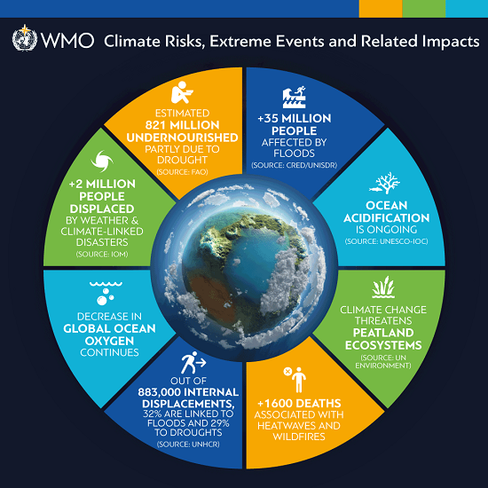

What are the Effects of Global Warming?
● Climate change affects the social and environmental determinants of health – clean air, safe drinking water, sufficient food and secure shelter.

● Between 2030 and 2050, climate change is expected to cause approximately 250 000 additional deaths per year, from malnutrition, malaria, diarrhoea and heat stress.

● The direct damage costs to health (i.e. excluding costs in health-determining sectors such as agriculture and water and sanitation), is estimated to be between USD 2-4 billion/year by 2030.

● Areas with weak health infrastructure – mostly in developing countries – will be the least able to cope without assistance to prepare and respond.

● Reducing emissions of greenhouse gases through better transport, food and energy-use choices can result in improved health, particularly through reduced air pollution.
